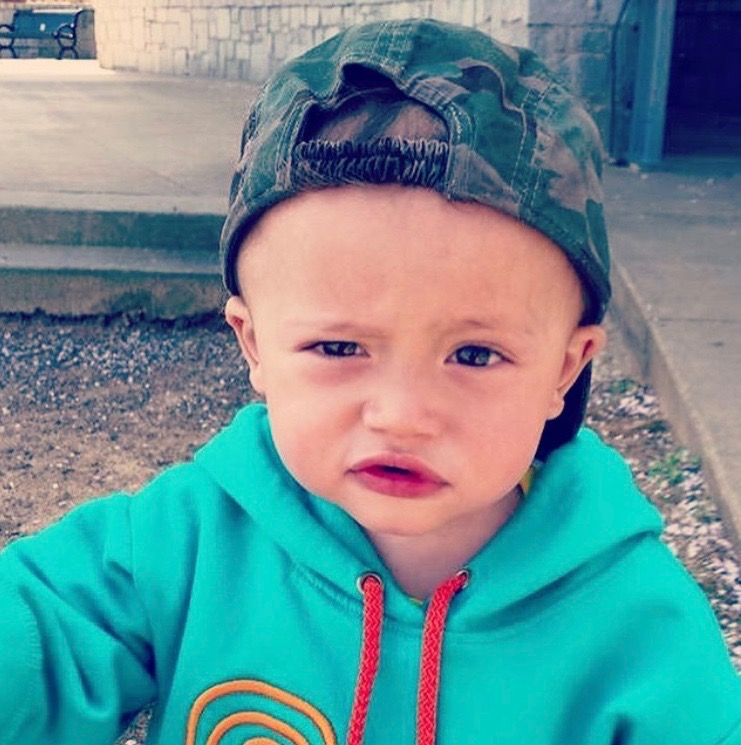
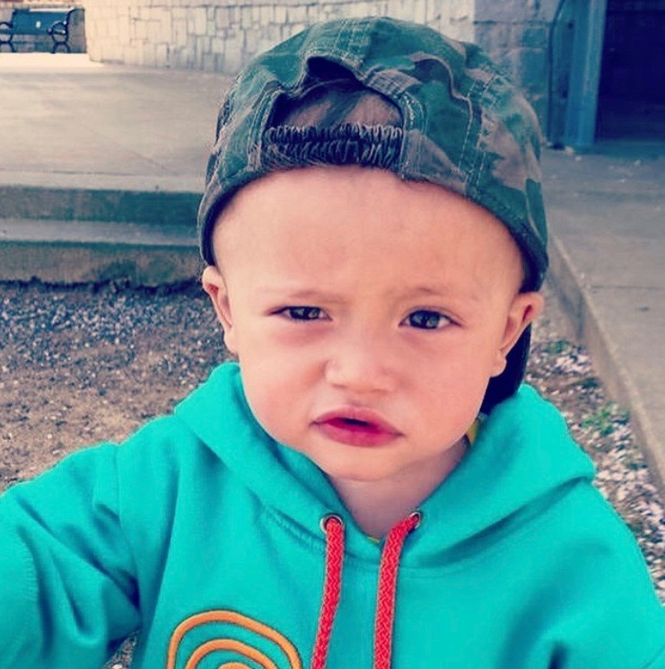

:: About Adrianna ::

 

Thank you for visiting my portoflio page!
Here a few details about me:
Pursuing a Bachelors in IT, Software Development Concentration
Treasurer of Women in Information Technology (WIT@GGC)
Tennis player in the making!
Follow me: